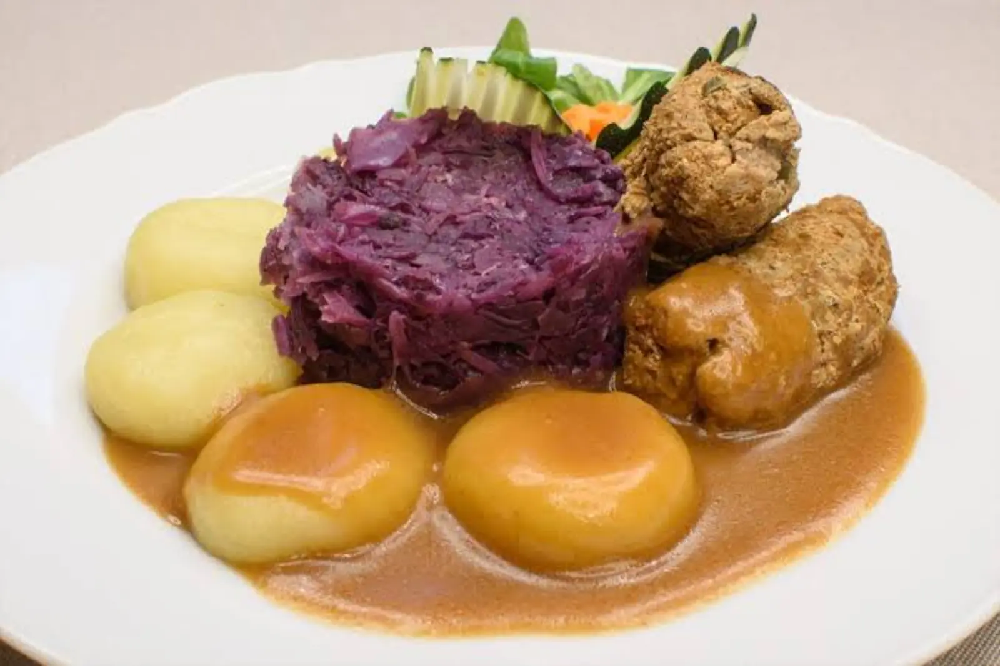

ARTYKUŁ • 7 października 2026
Kuchnia śląska — rolada, kluski i modra kapusta
Kuchnia śląska to konkret, sytość i szacunek do tradycji. Sprawdź, co warto zjeść na Śląsku — od rolady po kołocz, z konkretnymi miejscami i cenami.

Kuchnia śląska to kuchnia robotnicza — sycąca, konkretna, oparta na mięsie, ziemniakach i kapuście. Nie ma w niej finezji, ale jest głęboki smak i szacunek do tradycji, który przetrwał w śląskich domach do dziś. Śląsk przez wieki należał do Prus, a potem do Niemiec — stąd wpływy kuchni niemieckiej (rolada, karminadle, kołocz) i czeskiej (knedle, kapusta). Do tego doszedł przemysł: górnictwo, hutnictwo, fabryki. Śląska kuchnia to kuchnia ludzi ciężko pracujących — dlatego jest tłusta, pożywna i konkretna. Ślązacy mówią, że „dobre jedzenie to podstawa„, a obiad bez mięsa to nie obiad. Kuchnia śląska ma też własną gwarę — „modra kapusta„ to kapusta czerwona, „karminadle„ to kotlety mielone, „żymlok„ to kiszka ziemniaczana z bułką. Ta gwara wciąż żyje w śląskich domach, a wraz z nią — kuchnia przekazywana z pokolenia na pokolenie.
Ten przewodnik pokazuje 6 dań, które trzeba spróbować na Śląsku, oraz konkretne miejsca w Katowicach, Gliwicach, Zabrzu i Chorzowie, gdzie zjesz je w wersji autentycznej, a nie turystycznej.
Dania główne
1. Rolada śląska
Wołowina zawijana z boczkiem, cebulą i ogórkiem, duszona w sosie. Podaje się ją z kluskami śląskimi i modrą kapustą. Klasyk kuchni śląskiej, który smakuje jak niedzielny obiad u śląskiej babci. Rolada to jedno z tych dań, które na Śląsku je się przede wszystkim w niedzielę — jest pracochłonna, wymaga cierpliwości, a jej przygotowanie zajmuje kilka godzin. Cienko rozbity płat wołowiny zawija się z plasterkami boczku, cebulą, ogórkiem kiszonym i musztardą, zwija w roladę, obwiązuje sznurkiem lub spina wykałaczkami, a następnie dusi w sosie własnym przez 2–3 godziny. Sos powstaje z soków mięsa, warzyw i przypraw — najczęściej z dodatkiem majeranku, liścia laurowego i ziela angielskiego. W wersji śląskiej rolada jest podawana z kluskami śląskimi i modrą kapustą — to pełny, tradycyjny obiad, który na Śląsku je się w każdą niedzielę i przy każdej rodzinnej uroczystości. W restauracjach rolada bywa podawana z kluskami i kapustą, ale w wersji domowej — z ziemniakami z wody i surówką.
Cena: 45–70 zł w restauracjach, 35–50 zł w barach mlecznych. Gdzie: Restauracja Śląska (Katowice, ul. Mariacka 5), Marysin Dwór (Katowice, ul. Pszczyńska 315), Karczma Śląska (Chorzów, ul. Ryszki 4), Szyb Maciej (Zabrze, ul. Sienkiewicza 6).
2. Kluski śląskie
Okrągłe kluski z ziemniaków, z charakterystycznym wgłębieniem w środku (stąd nazwa: „kluski z dziurką„). Podaje się je do mięs, sosów i gulaszu. Sekret dobrych klusek śląskich to odpowiednie proporcje ziemniaków gotowanych i surowych oraz mąki ziemniaczanej. Tradycyjnie kluski robi się z tartych surowych ziemniaków zmieszanych z gotowanymi, formuje kulki i robi wgłębienie palcem — to nie tylko estetyka, ale i technika, dzięki której kluski równomiernie się gotują. Kluski śląskie są nieodłącznym elementem śląskiego obiadu — bez nich nie ma rolad, gulaszu ani kaczki. W wersji domowej podaje się je z sosem z mięsa, w wersji restauracyjnej — z różnymi sosami, np. grzybowym lub pieczeniowym. Kluski śląskie różnią się od zwykłych klusek ziemniaczanych tym, że są bardziej zbite i mają wyraźny, ziemniaczany smak. W wielu śląskich domach robi się je ręcznie, w dużych ilościach — na cały tydzień.
Cena: 12–20 zł za porcję jako dodatek. Gdzie: każda restauracja regionalna na Śląsku — Katowice, Gliwice, Zabrze, Chorzów.
3. Karminadle
Śląskie kotlety mielone — z mięsa mielonego, bułki i jajka, smażone na patelni lub duszone. Podaje się je z ziemniakami, kluskami lub w sosie. Proste danie, ale głęboko zakorzenione w śląskiej tradycji. Karminadle to jedno z tych dań, które na Śląsku je się w każdy dzień tygodnia — w domu, w barze mlecznym, w restauracji. Nazwa pochodzi z gwary śląskiej i najprawdopodobniej od niemieckiego słowa „Karbonade„ (kotlet). W wersji klasycznej karminadle przygotowuje się z mięsa mielonego wołowo-wieprzowego z dodatkiem bułki namoczonej w mleku, jajka, cebuli i przypraw. Formuje się kotlety, obtacza w bułce tartej lub mące i smaży na tłuszczu — albo dusi w sosie. W wersji śląskiej karminadle podaje się z ziemniakami z wody lub z kluskami śląskimi, a także z modrą kapustą lub z sosem. To danie tanie, sycące i bardzo popularne — w barach mlecznych w Katowicach można je dostać za 15–20 zł za porcję z dodatkami.
Cena: 15–25 zł za porcję w barze mlecznym, 30–45 zł w restauracji. Gdzie: Bar Mleczny w Katowicach (ul. Mariacka 12), Restauracja Śląska (Katowice), Karczma Śląska (Chorzów), Szyb Maciej (Zabrze).
Dodatki i zupy
4. Modra kapusta
Duszona czerwona kapusta z dodatkiem jabłek, cebuli i octu. Podaje się ją do mięs, zwłaszcza do rolady i kaczki. Kwaśno-słodki smak doskonale równoważy tłustość mięsa. Modra kapusta to jedno z tych dań, które na Śląsku je się przede wszystkim w okresie jesienno-zimowym — po zbiorach kapusty. W wersji śląskiej kapustę dusi się z cebulą, jabłkiem, octem, cukrem i przyprawami (liść laurowy, ziele angielskie, kminek) przez kilka godzin, aż stanie się miękka i aromatyczna. Nazwa „modra„ pochodzi z gwary śląskiej — od koloru kapusty (modry to po śląsku niebieski, ale też ogólnie „inny„ niż biały). W wersji domowej modrą kapustę podaje się z kluskami śląskimi i roladą, w wersji restauracyjnej — z kaczką lub z pieczenią. Warto pamiętać, że kapusta czerwona na Śląsku jest często domowej roboty — kupowana na targu, kwaszona lub duszona w domu. W słoikach ze sklepu jest już słodsza i mniej wyrazista.
Cena: 12–20 zł za porcję. Gdzie: Restauracja Śląska (Katowice), Marysin Dwór (Katowice), Karczma Śląska (Chorzów).
5. Żymlok
Śląska kiszka ziemniaczana z dodatkiem bułki, boczku i przypraw. Podaje się ją na ciepło, z musztardą lub cebulą. Tradycyjne danie śląskie, które wciąż gości na stołach w regionie. Żymlok to jedno z tych dań, które na Śląsku przygotowuje się po świniobiciu (zwykle w okresie jesienno-zimowym), kiedy jest dostęp do świeżego mięsa i krwi. W odróżnieniu od kiszki ziemniaczanej z innych regionów Polski, żymlok zawiera bułkę (stąd nazwa — od niemieckiego „Semmel„ — bułka), która nadaje mu bardziej „kluskową„ konsystencję. Ciasto przygotowuje się z tartych ziemniaków, boczku, cebuli, bułki i krwi, doprawia solą, pieprzem i majerankiem, nadziewa w jelita i piecze w piekarniku. Żymlok podaje się na ciepło, z cebulką, musztardą lub chrzanem. W wersji śląskiej żymlok jest często podawany na śniadanie lub na kolację — z chlebem i ogórkiem kiszonym.
Cena: 15–25 zł za porcję. Gdzie: Karczma Śląska (Chorzów), Restauracja Śląska (Katowice), lokalne sklepy mięsne na Śląsku (Katowice, Zabrze, Gliwice).
Słodycze
6. Kołocz śląski
Słodkie ciasto drożdżowe z kruszonką i różnymi dodatkami — makiem, serem, owocami. Podaje się go na weselach, świętach i uroczystościach rodzinnych. Jeden z najbardziej rozpoznawalnych słodkich wypieków regionu. Kołocz śląski to jedno z tych ciast, które na Śląsku piecze się przede wszystkim na wesela — bez kołocza nie ma śląskiego wesela. Ciasto drożdżowe przygotowuje się z mąki, drożdży, mleka, jajek i masła, formuje w prostokąt lub koło, a następnie wykłada się na nie nadzienie: makowe, serowe, owocowe (śliwki, jabłka, jagody) lub orzechowe. Wierzch posypuje się kruszonką z mąki, masła i cukru. Kołocz piecze się w dużych blachach, a następnie kroi na kawałki. W wersji śląskiej kołocz ma nazwę „kołocz„ (nie „kołacz„), a jego przygotowanie jest często rodzinnym rytuałem — piecze się go wspólnie, kilka dni przed uroczystością. Najlepszy jest świeży, jeszcze ciepły, z filiżanką kawy lub herbaty. W cukierniach na Śląsku kołocz można dostać przez cały rok, ale najświeższy jest w sezonie weselnym (maj–wrzesień).
Cena: 30–50 zł za całe ciasto, 8–12 zł za kawałek. Gdzie: Cukiernia Gruszka (Katowice, ul. Mariacka 20), Cukiernia Bożena (Zabrze, ul. Wolności 12), Cukiernia Śląska (Gliwice, ul. Zwycięstwa 5).
Gdzie jeść — konkretne miejsca
Katowice (centrum i okolice):
- Restauracja Śląska (ul. Mariacka 5) — klasyk kuchni śląskiej, rolada, kluski, modra kapusta.
- Marysin Dwór (ul. Pszczyńska 315) — kuchnia śląska w wersji eleganckiej, kaczka, rolada, kołocz.
- Bar Mleczny Katowice (ul. Mariacka 12) — bar mleczny z klasykami regionalnymi, karminadle, kluski, żymlok.
- Kuchnia Otwarta (ul. Staromiejska 6) — kuchnia śląska w wersji nowoczesnej.
Gliwice, Zabrze, Chorzów:
- Szyb Maciej (Zabrze, ul. Sienkiewicza 6) — restauracja w dawnym szybie górniczym, kuchnia śląska.
- Karczma Śląska (Chorzów, ul. Ryszki 4) — domowa kuchnia śląska, żymlok, modra kapusta.
- Cukiernia Śląska (Gliwice, ul. Zwycięstwa 5) — kołocz śląski, wypieki regionalne.
Praktyczne wskazówki
- Rolada śląska wymaga czasu (2–3 godziny duszenia). Warto zarezerwować stolik z wyprzedzeniem, zwłaszcza w weekendy.
- Kluski śląskie najlepsze są w barach mlecznych — tam są robione ręcznie, na miejscu. W eleganckich restauracjach bywają z mrożonek.
- Modra kapusta w wersji domowej jest bardziej wyrazista niż w restauracjach — warto pytać, czy kapusta jest domowej roboty.
- Żymlok dostępny jest głównie w okresie jesienno-zimowym, po świniobiciu — poza tym sezonem trudno go znaleźć.
- Kołocz śląski kupuj w cukierniach regionalnych — nie w supermarketach. Świeży, jeszcze ciepły, smakuje zupełnie inaczej.
- Restauracje w centrum Katowic są droższe i turystyczne. Zejdź 2 ulice dalej — do barów mlecznych i karczm — tam jedzenie jest tańsze i lepsze.
Podsumowanie
Kuchnia śląska to kuchnia robotnicza — sycąca, konkretna, głęboko zakorzeniona w tradycji przemysłowego regionu. Zamiast modnych dań znajdziesz tu klasykę: roladę, kluski śląskie, modrą kapustę, karminadle, żymlok, kołocz. Warto zaplanować wyjazd na Śląsk tak, żeby spróbować przynajmniej czterech z sześciu dań — a najlepiej zjeść je w barach mlecznych i karczmach, gdzie kuchnia jest wciąż domowa, a nie turystyczna. Jeśli lubisz regiony z własną tożsamością kulinarną, sprawdź też nasze strony o kuchni wielkopolskiej i kaszubskiej — tam kuchnia wygląda inaczej, ale równie ciekawie.